Artificial Intelligence: Technologies, Systems, Risks & Strategic Futures
Artificial intelligence is becoming a strategic infrastructure layer for the twenty-first century. It now influences knowledge production, economic productivity, national security, climate intelligence, education, governance and the future of human decision-making.
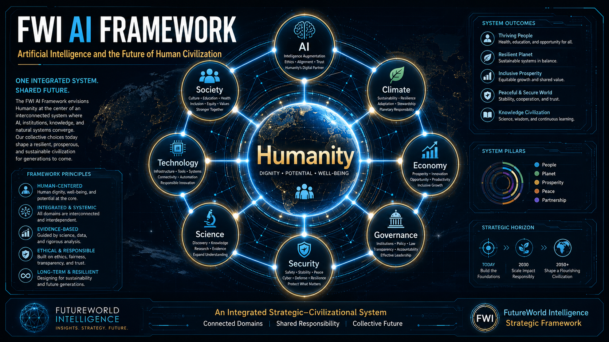
FWI strategic framing: AI as a cross-sector force shaping science, security, climate, economy, governance and society.
Executive Summary
Artificial Intelligence (AI) has moved from a specialized computing field into a general-purpose strategic technology. It enables machines to recognize patterns, generate content, support decisions, automate workflows and increasingly act through digital tools and connected systems. This transformation offers major opportunities for productivity, scientific research, climate monitoring, public services and education. At the same time, it raises serious risks involving bias, privacy, misinformation, cyber operations, surveillance, job disruption and concentration of power.
The central policy challenge is no longer whether AI will affect society, but how institutions, communities and governments can direct AI toward public benefit while limiting harms. The most credible approach combines technical capability with governance: transparency, accountability, safety testing, privacy protection, human oversight and international cooperation.
1. Understanding Artificial Intelligence
Artificial Intelligence refers to software and machine systems capable of performing tasks that normally require human intelligence. These tasks include learning from data, language understanding, visual interpretation, planning, problem-solving and decision support.
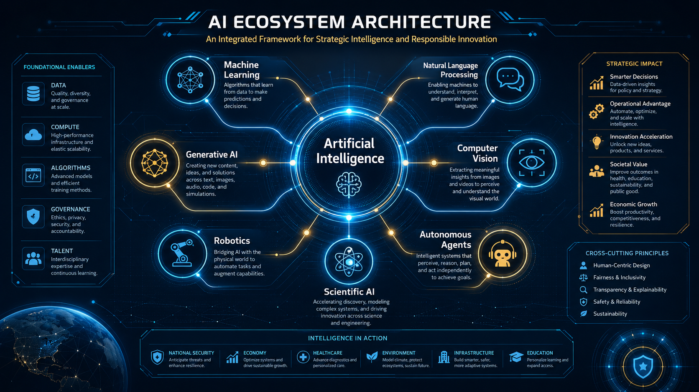
Machine Learning
Algorithms identify patterns in data and use those patterns to make predictions, classifications or recommendations.
Generative AI
Systems create new text, images, code, audio, video and synthetic outputs based on learned patterns.
Agentic AI
Emerging AI systems can plan tasks, use tools, coordinate steps and assist users across complex workflows.
2. Evolution of AI Capability
The trajectory of AI shows a shift from symbolic reasoning to data-driven learning, then to deep learning, generative AI and emerging agentic systems. This progression is important because each wave expands the number of sectors affected by AI.
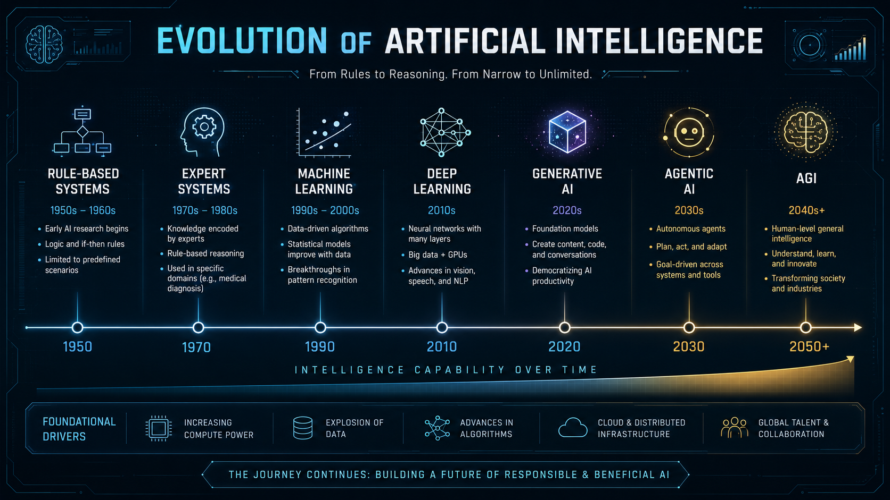
3. Global AI Ecosystem
AI power is shaped by several interacting factors: advanced chips, cloud infrastructure, skilled researchers, high-quality datasets, capital investment, energy systems and regulatory capacity. Countries with strong compute infrastructure and semiconductor access hold a major strategic advantage.
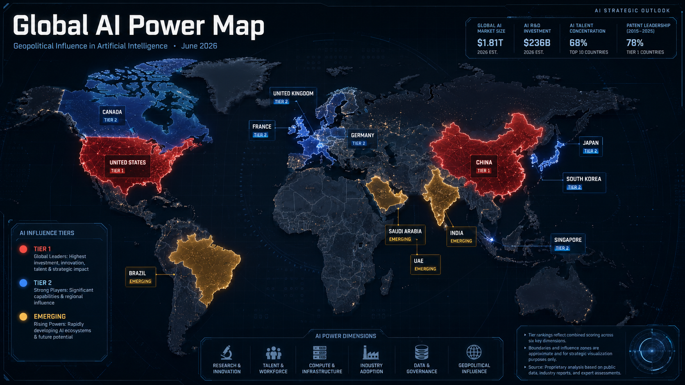
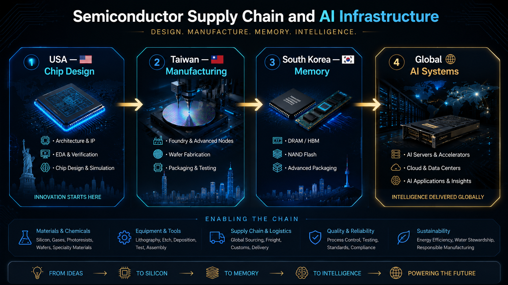
4. AI Across Critical Sectors
AI is not confined to technology companies. It is spreading across major public and private sectors, including healthcare, education, agriculture, climate, industry, finance, transportation, public administration and security.
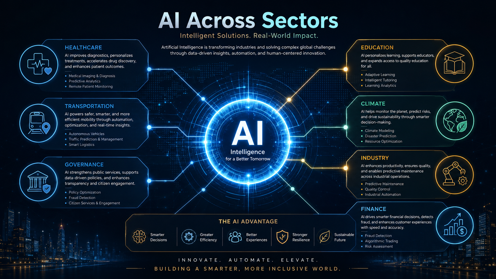
Education and Research
AI supports tutoring, content generation, translation, literature review, research synthesis, coding and data analysis.
Government and Public Services
AI may improve service delivery, document processing, risk analysis and policy planning if used transparently and responsibly.
Industry and Finance
AI enables predictive maintenance, fraud detection, supply-chain optimization, risk modeling and automation of routine workflows.
Climate and Environment
AI can support environmental monitoring, disaster early warning, forest protection, carbon accounting and climate adaptation planning.
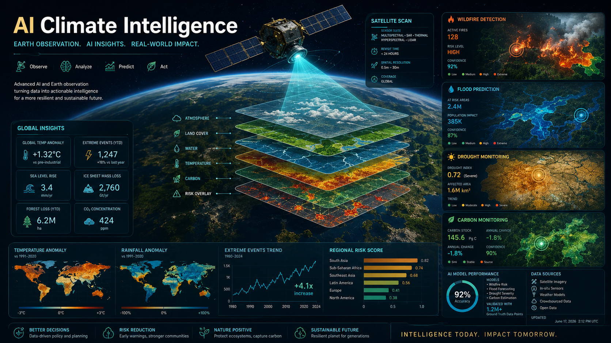
5. AI and National Security
AI is changing the security environment. It can strengthen cyber defense, intelligence analysis, logistics and decision support. However, it can also enable deepfakes, automated influence operations, cyberattacks, autonomous weapons, surveillance systems and strategic instability.
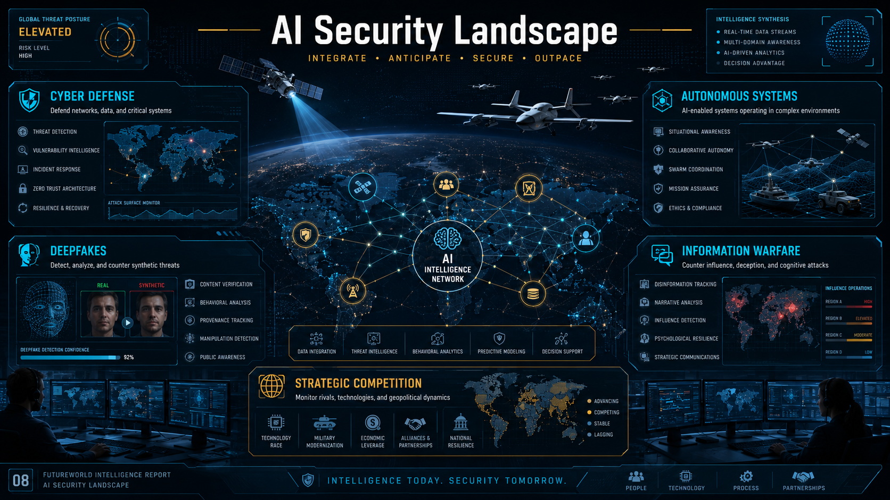
6. The Future of Work
AI is likely to transform tasks more than it simply removes occupations. Routine and standardized knowledge tasks are most exposed, while new demand will grow for AI-literate professionals who can supervise systems, interpret outputs, manage risks and design workflows.
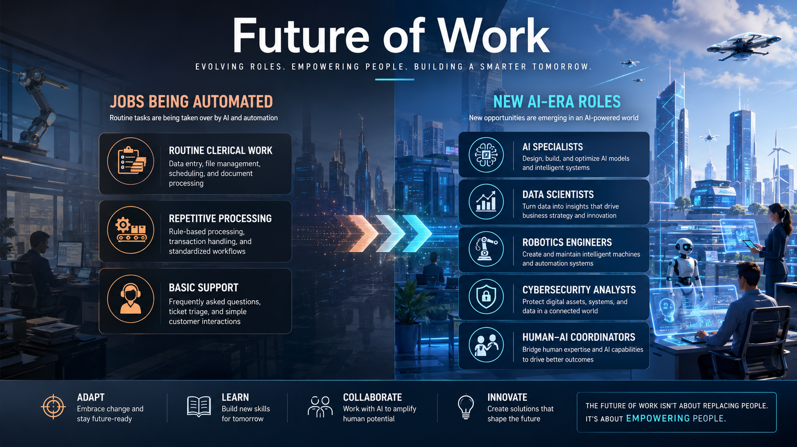
7. Strategic Risks
AI risk is multidimensional. Some risks are immediate, such as misinformation, data leakage, bias and cyber misuse. Others are systemic, including labor disruption, institutional dependence, concentration of technological power and potential loss of human control over highly capable autonomous systems.
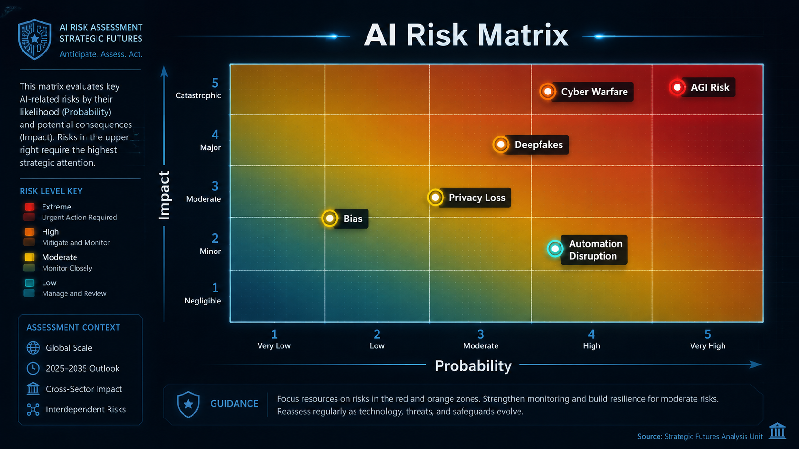
| Risk Area | Potential Harm | Mitigation Direction |
|---|---|---|
| Bias and Fairness | Discriminatory or unequal outcomes | Testing, audits, diverse datasets and appeal mechanisms |
| Privacy | Data leakage, surveillance and misuse | Data minimization, consent, encryption and legal safeguards |
| Misinformation | Deepfakes, propaganda and loss of trust | Authentication, media literacy and platform accountability |
| Cybersecurity | AI-enabled attacks and automated exploitation | Secure systems, monitoring and red-team testing |
| Autonomy | Unsafe decisions without sufficient human control | Human oversight, limits on deployment and risk-based governance |
8. Pathway Toward Advanced AI
Artificial General Intelligence (AGI) remains uncertain, but the development path toward more capable, autonomous and tool-using systems is already visible. The key issue is not prediction alone; it is preparedness. Institutions need the capacity to evaluate AI systems, manage risks and keep humans accountable for high-impact decisions.
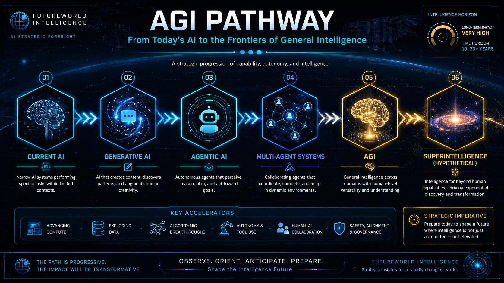
9. AI Governance and Responsible Deployment
Responsible AI governance requires practical frameworks, not only ethical statements. International guidance increasingly emphasizes human rights, safety, accountability, transparency, privacy, fairness and human oversight. NIST’s AI Risk Management Framework describes a voluntary approach for managing AI risks and promoting trustworthy AI. OECD AI Principles promote human-centric, trustworthy AI, while UNESCO’s Recommendation on the Ethics of AI emphasizes human rights, dignity, transparency, fairness and human oversight. The EU AI Act, which entered into force in 2024, represents a major legal model for risk-based AI regulation.
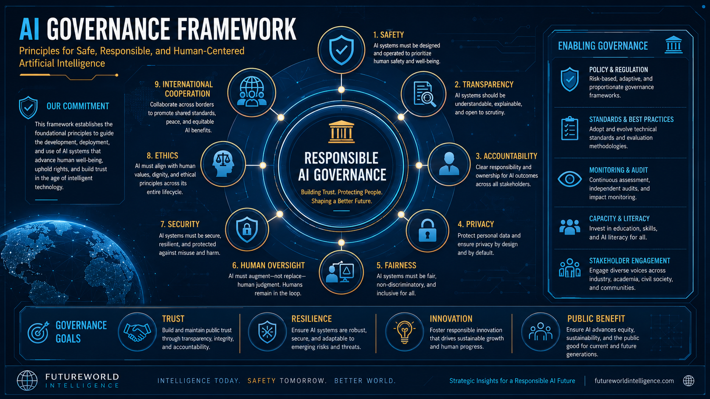
10. Implementable AI Prompts
The following prompt templates allow readers, students and professionals to apply the report immediately in research, policy analysis, project planning and responsible AI assessment.
Prompt 1: Strategic AI Report Generator
Prompt 2: AI Risk Assessment
Prompt 3: AI for Climate and Development
Strategic Conclusion
Artificial Intelligence is becoming one of the defining infrastructures of the future. It can strengthen learning, research, public services, climate action, economic productivity and scientific discovery. It can also amplify inequality, surveillance, misinformation, cyber conflict and institutional dependency if deployed without safeguards.
The most important capability for societies is not only technical adoption, but strategic governance: the ability to understand AI, apply it responsibly, regulate its risks and ensure that its benefits serve humanity, not only powerful institutions or markets.
Selected Sources
- National Institute of Standards and Technology (NIST), AI Risk Management Framework 1.0.
- OECD AI Principles, adopted in 2019 and updated in 2024.
- UNESCO Recommendation on the Ethics of Artificial Intelligence.
- European Union Artificial Intelligence Act, Regulation (EU) 2024/1689.